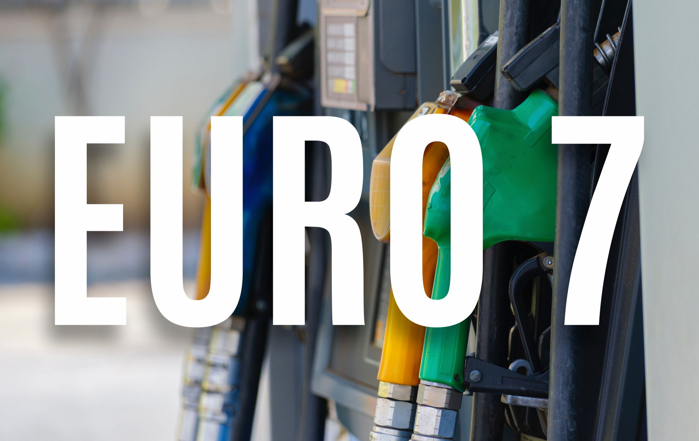
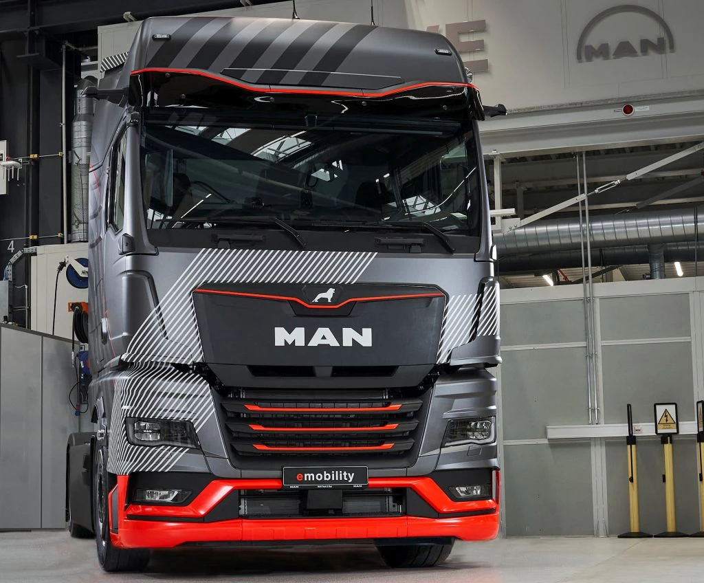
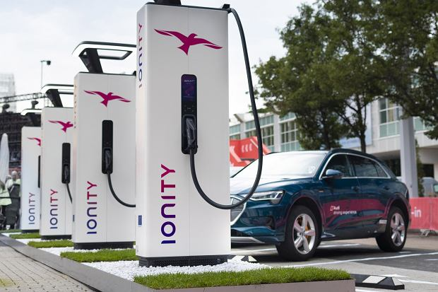
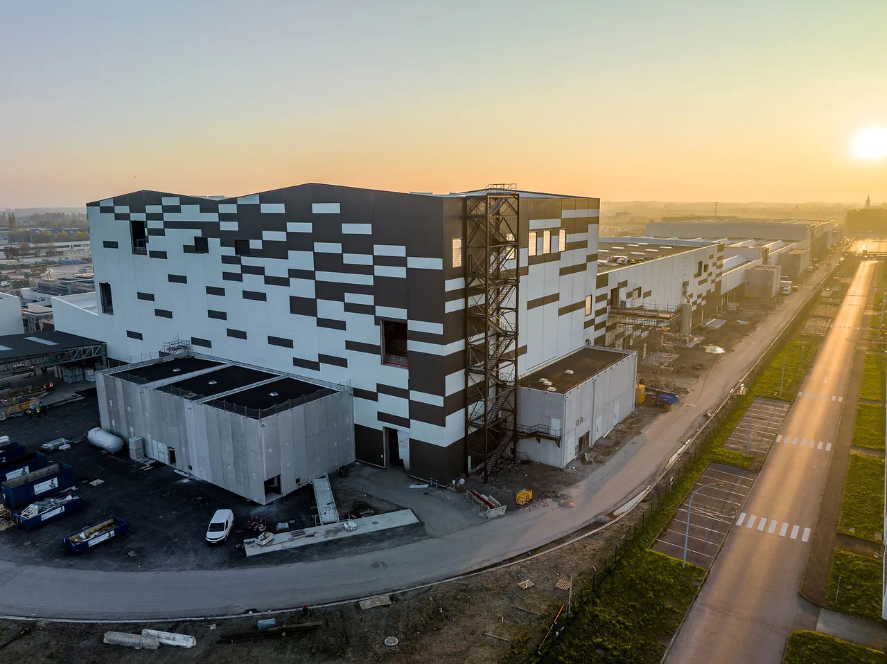
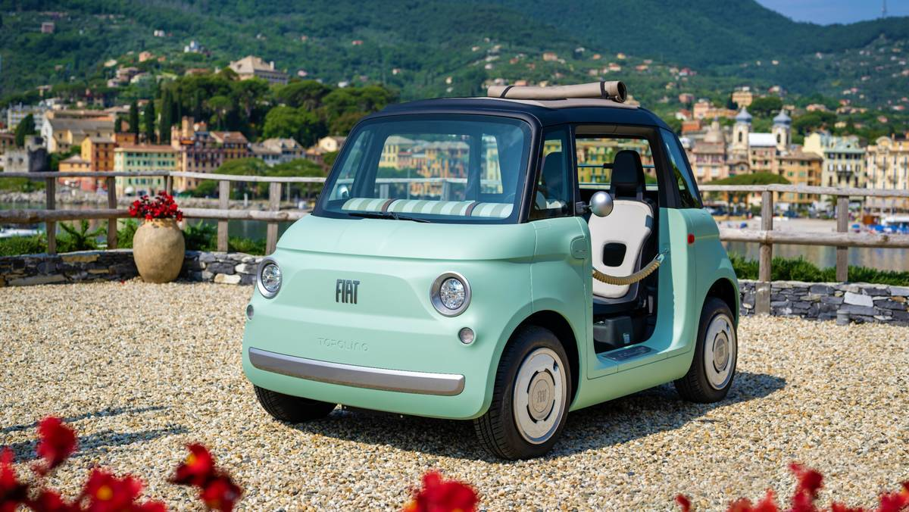

De Meo z zadowoleniem przyjmuje odrzucenie przez Włochy normy Euro 7

Luca de Meo, dyrektor generalny francuskiego producenta samochodów Renault, który sam jest Włochem, podziękował włoskiemu rządowi za odrzucenie proponowanych przez ten kraj nowych przepisów dotyczących normy emisji spalin Euro 7 . Według Automotive News Europe, jako prezesa europejskiego lobby motoryzacyjnego ACEA, mogłoby to odwrócić uwagę przemysłu motoryzacyjnego od drogi ku elektryfikacji. Zaostrzenie dopuszczalnych wartości emisji zanieczyszczeń, które mają obowiązywać od 2025 r. dla samochodów osobowych i dostawczych oraz od 2027 r. dla ciężarówek i autobusów, będzie negocjowane między krajami UE a ustawodawcami jeszcze w tym roku. Ustawa ta jest wdrażana równolegle z uchwalonym już „ zakazem silników spalinowych” , który zacznie obowiązywać od 2035 r. i który pozwoli na rejestrację wyłącznie samochodów osobowych bez szkodliwych dla klimatu emisji. Jednak tylne drzwi są nadal otwarte dla tak zwanych e-paliw . „Chcą wprowadzić nowe przepisy, które odciągną nas od naszego zadania, jakim jest przekształcenie branży ”, mówi de Meo Automotive News Europe. Chciałby, aby Komisja Europejska ponownie rozważyła plany wdrożenia tego nowego standardu. Dlatego popiera negatywne nastawienie swojego kraju – powiedział na imprezie w Trydencie. „Włochy zajęły bardzo jasne stanowisko w tej sprawie i dziękujemy temu krajowi za wsparcie ” – powiedział tam. Włoski rząd w osobie ministra transportu Matteo Salviniego ogłosił niedawno, że znalazł w Europie wystarczającą liczbę zwolenników, którzy również chcieliby odrzucić nową normę emisji, aby temu zapobiec. Są to najwyraźniej głównie kraje Europy Wschodniej. Można by przypuszczać, że nowe przepisy mogą sprawić, że pojazdy spalinowe będą droższe o kilka tysięcy euro, a mówi się o ponad 10 000 euro za autobusy i ciężarówki. Z kolei według doniesień medialnych UE przyjmuje w swoich kalkulacjach kilkaset euro za samochody osobowe i 2800 euro za większe pojazdy.
Tytuł 2

Grupa INIT z siedzibą w Karlsruhe informuje, że system zarządzania ładowaniem MOBILEcharge od jej spółki zależnej CarMedialab został zamówiony również przez firmy transportowe w Belgii, Izraelu i Senegalu. W Niemczech Rhein-Neckar-Verkehr i Leipziger Verkehrsbetriebe pracują z systemem. Grupa INIT stworzyła zintegrowany całościowy system, który ma „objąć wszystkie wymagania operacyjne e-mobilności”, aby móc ekonomicznie wprowadzać e-busy i efektywnie je obsługiwać. Centralnymi elementami składowymi są system zarządzania ładowaniem MOBILEcharge i system zarządzania zajezdnią MOBILE-DMS. Po klientach takich jak Rhein-Neckar-Verkehr i Leipziger Verkehrsbetriebe, gracze z Belgii, Izraela i Dakaru zamówili teraz również te pierwsze. Projekt w stolicy Senegalu, Dakarze, jest pierwszym projektem grupy INIT w Afryce. Grupa INIT informuje, że firma transportowa Dakar Mobilité jest w trakcie elektryfikacji publicznej sieci autobusowej za pomocą projektu Bus Rapid Transit. W ramach projektu do 2025 roku ma jeździć około 150 autobusów elektrycznych. W Izraelu INIT chce połączyć „setki punktów ładowania dla e-autobusów” z zarządzaniem ładowaniem w ramach projektu z lokalnym Ministerstwem Transportu i Bezpieczeństwa Ruchu Drogowego oraz Autostradami Ayalon. Stopniowo w zajezdniach na terenie całego kraju mają być integrowane „liczne punkty ładowania”. Według Karlsruhers trzecim klientem w ciągu kilku tygodni jest Société des Transports Intercommunaux de Bruxelles (STIB), jeden z największych operatorów transportu publicznego w Belgii. Jak informuje firma, niedawno zawarli z nią ramową umowę na MOBILEcharge, zgodnie z którą w ciągu dziesięciu lat ma zostać zintegrowanych nawet 1000 e-autobusów i 500 ładowarek różnych producentów. Do końca tego roku w zajezdni Marly ma powstać 50 kontrolowanych przez system punktów ładowania dla nawet 100 pojazdów. „MOBILEcharge jest już wykorzystywane przez wiele firm w Europie i USA do inteligentnego zarządzania ładowaniem”, informuje INIT. Spółka zależna CarMedialab wyrobiła sobie markę dzięki konstruowaniu i łączeniu złożonych krajobrazów systemowych i polega na interoperacyjności oraz rozwoju otwartych systemów i interfejsów (VDV). pressebox.de
Tytuł 3
Grupa INIT z siedzibą w Karlsruhe informuje, że system zarządzania ładowaniem MOBILEcharge od jej spółki zależnej CarMedialab został zamówiony również przez firmy transportowe w Belgii, Izraelu i Senegalu. W Niemczech Rhein-Neckar-Verkehr i Leipziger Verkehrsbetriebe pracują z systemem. Grupa INIT stworzyła zintegrowany całościowy system, który ma „objąć wszystkie wymagania operacyjne e-mobilności”, aby móc ekonomicznie wprowadzać e-busy i efektywnie je obsługiwać. Centralnymi elementami składowymi są system zarządzania ładowaniem MOBILEcharge i system zarządzania zajezdnią MOBILE-DMS. Po klientach takich jak Rhein-Neckar-Verkehr i Leipziger Verkehrsbetriebe, gracze z Belgii, Izraela i Dakaru zamówili teraz również te pierwsze. Projekt w stolicy Senegalu, Dakarze, jest pierwszym projektem grupy INIT w Afryce. Grupa INIT informuje, że firma transportowa Dakar Mobilité jest w trakcie elektryfikacji publicznej sieci autobusowej za pomocą projektu Bus Rapid Transit. W ramach projektu do 2025 roku ma jeździć około 150 autobusów elektrycznych. W Izraelu INIT chce połączyć „setki punktów ładowania dla e-autobusów” z zarządzaniem ładowaniem w ramach projektu z lokalnym Ministerstwem Transportu i Bezpieczeństwa Ruchu Drogowego oraz Autostradami Ayalon. Stopniowo w zajezdniach na terenie całego kraju mają być integrowane „liczne punkty ładowania”. Według Karlsruhers trzecim klientem w ciągu kilku tygodni jest Société des Transports Intercommunaux de Bruxelles (STIB), jeden z największych operatorów transportu publicznego w Belgii. Jak informuje firma, niedawno zawarli z nią ramową umowę na MOBILEcharge, zgodnie z którą w ciągu dziesięciu lat ma zostać zintegrowanych nawet 1000 e-autobusów i 500 ładowarek różnych producentów. Do końca tego roku w zajezdni Marly ma powstać 50 kontrolowanych przez system punktów ładowania dla nawet 100 pojazdów. „MOBILEcharge jest już wykorzystywane przez wiele firm w Europie i USA do inteligentnego zarządzania ładowaniem”, informuje INIT. Spółka zależna CarMedialab wyrobiła sobie markę dzięki konstruowaniu i łączeniu złożonych krajobrazów systemowych i polega na interoperacyjności oraz rozwoju otwartych systemów i interfejsów (VDV). pressebox.de
Ionity obniża ceny abonamentowego modelu ładowania

Ionity dostosowało warunki swojego modelu abonamentowego Ionity Passport na letni sezon podróżniczy. Stawka miesięczna będzie tańsza, ale wzrosną koszty za kilowatogodzinę. Nie ma jednak żadnych zmian w stosunku do znanej stawki 0,79 euro/kWh za ładowanie ad-hoc. Ionity wprowadziło subskrypcję Passport w październiku 2021 roku . W przypadku nowych umów paszportowych od 6 czerwca minimalny okres obowiązywania umowy wynoszący dwanaście miesięcy nie będzie już obowiązywał. Paszport Ionity można anulować w dowolnym momencie z miesięcznym wypowiedzeniem – dlatego powinien się opłacać również za poszczególne miesiące z długimi podróżami, np. na wakacje. Opłata miesięczna spada z dotychczasowych 17,99 euro do 11,99 euro. Ale: Do tej pory klienci mogli znacznie obniżyć cenę ładowania w zamian za 17,99 euro – do 35 centów za kilowatogodzinę. Zgodnie z nowym modelem cenowym warunki za naliczoną kilowatogodzinę energii elektrycznej są „zawsze o 20 centów niższe od aktualnie obowiązującej taryfy Ionity Direct”. Na przykład każdy, kto ładuje z Ionity Passport w Niemczech, zapłaci 0,59 euro/kWh zamiast ceny ad hoc 0,79 euro/kWh. Odchylenia od tej ceny mogą wystąpić w niektórych krajach europejskich ze względu na odpowiednią walutę lokalną, stawki VAT specyficzne dla danego kraju lub lokalne specyfiki, mówi Ionity. Subskrypcja Passport powinna być łatwa do zarezerwowania za pośrednictwem własnej aplikacji Ionity na smartfony. Operator wylicza, że w porównaniu z taryfą „Ionity Direct” (tj. 0,79 euro/kWh) abonament opłaca się już od 60 kWh miesięcznie. Odpowiada to „około dwóm procesom ładowania lub przejechaniu 300 kilometrów (km) samochodem elektrycznym przy średnim zużyciu 20 kWh/100 km”. Uzasadniając nowy model cenowy, w oświadczeniu stwierdzono, że Ionity Passport uwzględnia „zmieniające się wymagania rynku i klientów”. Elli, spółka zależna VW, która pobiera opłaty, również podkreśliła nową elastyczność, podnosząc ceny w czerwcu, ponieważ minimalny okres obowiązywania umowy został również skrócony z dwunastu do jednego miesiąca. Ionity twierdzi, że obecnie obsługuje ponad 480 parków ładowania z ponad 2300 punktami ładowania HPC w 24 krajach. Każdy punkt ładowania oferuje do 350 kW. Podział mocy, w którym maksymalna moc znamionowa jest dzielona między dwa lub więcej punktów ładowania, nie istnieje w Ionity.
Volvo Penta i FTMH zelektryfikują wózki widłowe
Volvo Penta wraz z włoskim producentem FTMH (Fantuzzi Team Material Handling) opracowuje gamę elektrycznych wózków widłowych o masie do 52 ton. Pierwszym zelektryfikowanym modelem będzie 26-tonowy FTF 26-12, obecnie wyposażony w silnik wysokoprężny Volvo Penta, jako FTF 26-12 EL. 600-woltowy napęd elektryczny wykorzystuje system akumulatorów Volvo Penta o pojemności 360 kWh, który można ładować z mocą do 250 kW. Według Volvo proces ładowania trwa „nieco ponad godzinę”. „Ta współpraca to kolejny dowód, który podkreśla naszą koncentrację i duży potencjał segmentu transportu materiałów” — mówi Zeyd Okutan, menedżer produktu w Volvo Penta. „Operacje portowe i terminale logistyczne dobrze nadają się do elektryfikacji i widzimy ogromne możliwości dla flot pojazdów bezemisyjnych, w tym wózków widłowych, wózków do obsługi pustych kontenerów, wózków wysokiego składowania i ciągników terminalowych. Dobra infrastruktura i dobrze zdefiniowane cykle pracy ułatwią transformację branży, przynosząc korzyści, w tym zmniejszenie hałasu, wydłużenie czasu sprawności i produktywności”. Eugenio Ponzini, kierownik techniczny w FTMH, dodał: „Nasz wyłączny dealer Volvo Penta we Włoszech, CARMI, jest kluczowym partnerem w projekcie, wspierając rozwój tego, co wszyscy mamy nadzieję, będzie pierwszym z szerokiej gamy elektrycznych maszyn do transportu materiałów, które być produkowany w Brescello”. Volvo Penta działa we wszystkich rodzajach mobilności, od wysiłków zmierzających do elektryfikacji sektora morskiego z Danfoss Editron, po budowę elektrycznych układów napędowych dla elektrycznych wozów strażackich z Rosenbauer. W 2019 roku firma zelektryfikowała również prom z silnikiem Diesla .
Tytuł 3
Grupa INIT z siedzibą w Karlsruhe informuje, że system zarządzania ładowaniem MOBILEcharge od jej spółki zależnej CarMedialab został zamówiony również przez firmy transportowe w Belgii, Izraelu i Senegalu. W Niemczech Rhein-Neckar-Verkehr i Leipziger Verkehrsbetriebe pracują z systemem. Grupa INIT stworzyła zintegrowany całościowy system, który ma „objąć wszystkie wymagania operacyjne e-mobilności”, aby móc ekonomicznie wprowadzać e-busy i efektywnie je obsługiwać. Centralnymi elementami składowymi są system zarządzania ładowaniem MOBILEcharge i system zarządzania zajezdnią MOBILE-DMS. Po klientach takich jak Rhein-Neckar-Verkehr i Leipziger Verkehrsbetriebe, gracze z Belgii, Izraela i Dakaru zamówili teraz również te pierwsze. Projekt w stolicy Senegalu, Dakarze, jest pierwszym projektem grupy INIT w Afryce. Grupa INIT informuje, że firma transportowa Dakar Mobilité jest w trakcie elektryfikacji publicznej sieci autobusowej za pomocą projektu Bus Rapid Transit. W ramach projektu do 2025 roku ma jeździć około 150 autobusów elektrycznych. W Izraelu INIT chce połączyć „setki punktów ładowania dla e-autobusów” z zarządzaniem ładowaniem w ramach projektu z lokalnym Ministerstwem Transportu i Bezpieczeństwa Ruchu Drogowego oraz Autostradami Ayalon. Stopniowo w zajezdniach na terenie całego kraju mają być integrowane „liczne punkty ładowania”. Według Karlsruhers trzecim klientem w ciągu kilku tygodni jest Société des Transports Intercommunaux de Bruxelles (STIB), jeden z największych operatorów transportu publicznego w Belgii. Jak informuje firma, niedawno zawarli z nią ramową umowę na MOBILEcharge, zgodnie z którą w ciągu dziesięciu lat ma zostać zintegrowanych nawet 1000 e-autobusów i 500 ładowarek różnych producentów. Do końca tego roku w zajezdni Marly ma powstać 50 kontrolowanych przez system punktów ładowania dla nawet 100 pojazdów. „MOBILEcharge jest już wykorzystywane przez wiele firm w Europie i USA do inteligentnego zarządzania ładowaniem”, informuje INIT. Spółka zależna CarMedialab wyrobiła sobie markę dzięki konstruowaniu i łączeniu złożonych krajobrazów systemowych i polega na interoperacyjności oraz rozwoju otwartych systemów i interfejsów (VDV). pressebox.de
Firma Automotive Cells otwiera swoją pierwszą gigafabrykę akumulatorów we Francji

Stellantis połączył siły z TotalEnergies i Mercedes-Benz, aby uczcić otwarcie gigantycznej fabryki akumulatorów Automotive Cells Company (ACC) w Billy-Berclau Douvrin we Francji - pierwszego z trzech planowanych obiektów w Europie. Przy początkowej zdolności produkcyjnej 13 gigawatogodzin (GWh), która ma wzrosnąć do 40 GWh do 2030 r., zakład będzie dostarczał wysokowydajne akumulatory litowo-jonowe o „ minimalnym ” śladzie węglowym. Według Stellantis ten pierwszy z trzech europejskich zakładów produkcyjnych zostanie uruchomiony przed końcem 2023 roku. „Gigafactory przyczyni się do realizacji celu Stellantis, jakim jest zwiększenie zdolności produkcyjnej akumulatorów w Europie do 250 GWh do 2030 r. ”, czytamy w niedawnym komunikacie prasowym. Ma on na celu wsparcie firmy w jej misji oferowania szerokiej gamy technologii akumulatorowych, które odpowiadają potrzebom klientów w całym portfolio marki Stellantis.Dzięki dodatkowym kontraktom na dostawy i łącznie pięciu gigafabrykom w Europie i Ameryce Północnej Stellatis zapewnił sobie moc około 400 GWh do 2030 roku. Firma ma obecnie na rynku 24 modele samochodów elektrycznych i do końca 2024 r. prawie podwoi tę liczbę do 47. Stellantis planuje sprzedać ponad 75 modeli pojazdów elektrycznych i 5 milionów pojazdów elektrycznych na całym świecie do 2030 r., aby sprzedawać je na całym świecie. Dziś Stellantis Peugeot e-208 i Fiat 500 Electric znajdują się w pierwszej piątce najlepiej sprzedających się samochodów elektrycznych we Francji i w pierwszej dziesiątce w Europie. Ponieważ chemia akumulatorów wciąż ewoluuje, Stellantis „dokonuje przeglądu wszystkich technologii, aby sprostać różnorodnym potrzebom szerokiej bazy klientów, aby zapewnić czystą, bezpieczną i niedrogą mobilność ” . Obiecujące rozwiązania, takie jak technologia akumulatorów półprzewodnikowych firmy Factorial orazZdaniem Stellantisa akumulatory litowo-siarkowe Lyten mogą pomóc poprawić osiągi pojazdu i wrażenia klientów, tworząc bardziej zrównoważone wrażenia z korzystania z pojazdu elektrycznego dla wszystkich.
Ten nowy elektryczny Fiat nazywa się Topolino

Włoski producent samochodów Fiat, część Grupy Stellantis, ujawnił nazwę i pierwszy wizerunek swojego nowego, zrównoważonego rozwiązania w zakresie mobilności miejskiej : Topolino. Całkowicie elektryczny czterokołowiec jest gotowy, aby przyczynić się do rozwoju miejskiej mobilności elektrycznej i wnieść cały optymizm swojego imiennika do dostępnej, w pełni elektrycznej wersji, która łączy w sobie wszystkie zalety Fiata 500 , zgodnie z towarzyszącą prasą uwolnienie. Mówi się, że nowe Topolino doskonale ucieleśnia Dolce Vita i włoskiego ducha Fiata. „Samochód zaprojektowany, by wywołać uśmiech na twarzy, Topolino wnosi nowe podejście do dolce vita na ulice miast, pełne radości, optymizmu i zabawy”, pisze producent samochodów . Nowy czterokołowiec to nowa mobilna hulajnoga przeznaczona dla szerokiego grona odbiorców, w tym najmłodszych klientów, rodzin i miłośników miast. Jest idealny dla miasta i dla osób poszukujących zrównoważonych i świeżych rozwiązań w zakresie mobilności i jest zgodny z demokratyczną misją Fiata polegającą na oferowaniu zrównoważonych rozwiązań w zakresie mobilności w mieście, które są dostępne dla wszystkich. Topolino jest skierowany do młodszych pokoleń i jest czymś więcej niż tylko urządzeniem mobilnym. „Dzięki swojemu uroczemu wzornictwu, które jest odpowiednie dla każdego pokolenia, sprawi, że młodzi ludzie znów zainteresują się samochodami ” – pisze Fiat. Zbliżająca się premiera jest kolejnym krokiem na drodze marki do elektryfikacji i jest zgodna z wizją Fiata: „Zielony jest tylko wtedy, gdy jest zielony dla wszystkich” . W końcu codzienną pracą Fiata jako producenta samochodów jest ponowne przemyślenie jazdy miejskiej , uczynienie jej bardziej zrównoważoną i dostępną dla wszystkich, a nowy Topolino ze swoim fajnym designem będzie idealnym pojazdem do rozwoju zrównoważonej mobilności. Fiat nie opublikował jeszcze żadnych dalszych szczegółów na temat pojazdu poza zdjęciem. Jest oczywiście blisko spokrewniony z Oplem Rocks-e i Citroenem Ami. Na zdjęciu dwa siedzenia, zamiast drzwi na zdjęciu kordon, przez co Topolino bardziej przypomina leżak plażowy niż samochód.
Grupa Init
Grupa INIT z siedzibą w Karlsruhe informuje, że system zarządzania ładowaniem MOBILEcharge od jej spółki zależnej CarMedialab został zamówiony również przez firmy transportowe w Belgii, Izraelu i Senegalu. W Niemczech Rhein-Neckar-Verkehr i Leipziger Verkehrsbetriebe pracują z systemem. Grupa INIT stworzyła zintegrowany całościowy system, który ma „objąć wszystkie wymagania operacyjne e-mobilności”, aby móc ekonomicznie wprowadzać e-busy i efektywnie je obsługiwać. Centralnymi elementami składowymi są system zarządzania ładowaniem MOBILEcharge i system zarządzania zajezdnią MOBILE-DMS. Po klientach takich jak Rhein-Neckar-Verkehr i Leipziger Verkehrsbetriebe, gracze z Belgii, Izraela i Dakaru zamówili teraz również te pierwsze. Projekt w stolicy Senegalu, Dakarze, jest pierwszym projektem grupy INIT w Afryce. Grupa INIT informuje, że firma transportowa Dakar Mobilité jest w trakcie elektryfikacji publicznej sieci autobusowej za pomocą projektu Bus Rapid Transit. W ramach projektu do 2025 roku ma jeździć około 150 autobusów elektrycznych. W Izraelu INIT chce połączyć „setki punktów ładowania dla e-autobusów” z zarządzaniem ładowaniem w ramach projektu z lokalnym Ministerstwem Transportu i Bezpieczeństwa Ruchu Drogowego oraz Autostradami Ayalon. Stopniowo w zajezdniach na terenie całego kraju mają być integrowane „liczne punkty ładowania”. Według Karlsruhers trzecim klientem w ciągu kilku tygodni jest Société des Transports Intercommunaux de Bruxelles (STIB), jeden z największych operatorów transportu publicznego w Belgii. Jak informuje firma, niedawno zawarli z nią ramową umowę na MOBILEcharge, zgodnie z którą w ciągu dziesięciu lat ma zostać zintegrowanych nawet 1000 e-autobusów i 500 ładowarek różnych producentów. Do końca tego roku w zajezdni Marly ma powstać 50 kontrolowanych przez system punktów ładowania dla nawet 100 pojazdów. „MOBILEcharge jest już wykorzystywane przez wiele firm w Europie i USA do inteligentnego zarządzania ładowaniem”, informuje INIT. Spółka zależna CarMedialab wyrobiła sobie markę dzięki konstruowaniu i łączeniu złożonych krajobrazów systemowych i polega na interoperacyjności oraz rozwoju otwartych systemów i interfejsów (VDV). pressebox.de